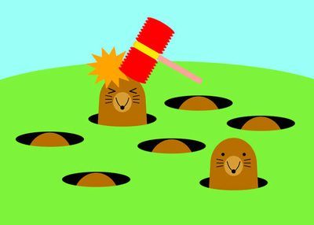

Critérios de Avaliação
A avaliação da disciplina é composta por um Projeto Final, desenvolvido em grupo e dividido em três entregas parciais, e por uma série de exercícios práticos de fixação, desenvolvidos individualmente. No Projeto Final, a nota de cada aluno é atribuída conforme a sua contribuição em cada etapa.
Nota do Projeto Final (P)
P = 0,10 · P1 + 0,45 · P2 + 0,45 · P3
Média parcial (M)
M = 0,75 · P + 0,25 · T
Em que P1, P2 e P3 são as notas das três parciais do Projeto e T é a média dos exercícios práticos de fixação.
Média final (MF)
| Média parcial | Situação | Média final |
|---|---|---|
| M < 2,5 | Reprovação direta | MF = M |
| 2,5 ≤ M < 6,0 | Exame obrigatório (aprovado se MF ≥ 5,0) | MF = 0,6 · M + 0,4 · E |
| M ≥ 6,0 | Aprovação direta | MF = M |
Além da nota, é necessário ter frequência mínima de 75%. O exame não substitui avaliações em caso de falta abonada.
Projeto Final: Acerte a Toupeira

Ilustração do jogo Acerte a Toupeira.
No Projeto Final, cada grupo (de 4 a 5 alunos) desenvolverá uma plataforma online para o jogo Acerte a Toupeira (Whac-a-Mole), um jogo de arcade criado em 1975, no Japão. O jogo terá as modalidades “Clássica” e “Explosiva”, níveis de dificuldade, histórico de partidas e um ranking de jogadores. O jogo será feito em JavaScript (front-end) e a autenticação e o armazenamento dos dados em PHP com MySQL/MariaDB (back-end).
| Parcial | O que deve ser entregue | Peso | Data |
|---|---|---|---|
| 1ª | Páginas HTML não-funcionais, já com todo o estilo em CSS e a navegação final. | 10% | 05/10 |
| 2ª | Dinâmica do jogo implementada e funcionando em JavaScript (ainda sem back-end). | 45% | 07/11 |
| 3ª | Versão final, com back-end em PHP, controle de acesso e banco de dados. | 45% | 30/11 |
Cada parcial deve ser acompanhada de um vídeo de até 10 minutos, em que todos os membros do grupo apresentam o que foi desenvolvido. Saiba mais sobre o jogo original na Wikipédia.
Observações Importantes
- Não serão aceitas atividades entregues fora do prazo;
- Todas as atividades práticas de fixação devem ser desenvolvidas individualmente;
- Todos os documentos HTML e CSS devem ser validados nos sites do W3C;
- Caso seja detectada qualquer forma de fraude, todos os alunos envolvidos ficarão com média 0,0 na disciplina e a infração será reportada à Coordenação de Curso.